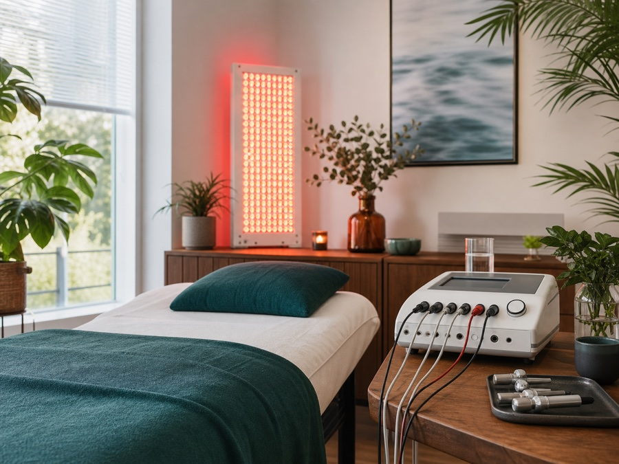

Ernährung & Stoffwechsel
Nährstoffversorgung, Essrhythmus, Fastenoptionen und individuelle Verträglichkeit.
Dr. Christian Bahr · Berlin-Wilmersdorf
Für Menschen, die Befunde, Lebensstil und mögliche Einflussfaktoren besser einordnen und ihre nächsten Schritte bewusst planen möchten.
Die Auen-Praxis verbindet jahrzehntelange ärztliche Erfahrung mit moderner Diagnostik, regulativer Medizin und alltagstauglicher Begleitung. Im Mittelpunkt steht der Mensch mit seiner Lebenssituation, seinen Belastungen und seinen Zielen.
Die Praxis arbeitet beratend und diagnostisch. Sie richtet sich an Menschen, die bereit sind, Veränderung aktiv mitzutragen: in Ernährung, Lebensstil, Umweltbelastung, Regeneration und mentaler Ausrichtung.
Die Praxis ist auf geplante ärztliche Beratung ausgerichtet. Sie passt zu Menschen, die aktiv mitarbeiten und Empfehlungen realistisch im Alltag prüfen möchten.
Nährstoffversorgung, Essrhythmus, Fastenoptionen und individuelle Verträglichkeit.
Bestehende Ergebnisse werden verständlich geordnet und bei Bedarf gezielt ergänzt.
Mögliche Belastungen durch Schwermetalle, Schadstoffe oder Lebensumfeld werden eingeordnet.
Schlaf, Belastbarkeit, Nervensystem und Erholungsfähigkeit werden praktisch betrachtet.
Frühe Orientierung für Menschen, die gesundheitliche Risiken bewusster steuern möchten.
Eine strukturierte ärztliche Einordnung vorhandener Befunde und bisheriger Maßnahmen.
Jede Empfehlung entsteht aus Gespräch, Vorgeschichte und passender Diagnostik. Ziel ist ein verständlicher Plan, der realistisch in den Alltag passt.
Beratung zu natürlichen, nährstoffreichen Lebensmitteln, Darmgesundheit, Fastenoptionen und Wasserqualität als Grundlage langfristiger Prävention.
Mögliche Belastungen durch Schwermetalle, Schadstoffe und Lebensumfeld werden diagnostisch eingeordnet; weitere Schritte werden individuell abgewogen.

Komplementäre regulative Verfahren wie Licht, Frequenzen, Mikroströme und Entspannung können ärztliche Diagnostik und Beratung ergänzen.
Gesundheit wird als Zusammenspiel körperlicher, mentaler und lebenspraktischer Faktoren betrachtet. Schlaf, Ernährung, Bewegung, Stressregulation und Selbstverantwortung werden so übersetzt, dass daraus konkrete nächste Schritte entstehen.
Der Prozess bleibt transparent: erst verstehen, dann gezielt untersuchen, anschließend priorisieren und begleiten.
Beschwerden, Vorgeschichte, Ziele und bisherige Befunde werden geordnet.
Labor- und Funktionsdiagnostik wird nur dort eingesetzt, wo sie Entscheidungen verbessert.
Ernährung, Entlastung, Regeneration und weitere Maßnahmen werden priorisiert.
Kontrollen und Anpassungen helfen, den Plan dauerhaft in den Alltag zu bringen.
Die Beratung soll Orientierung geben, ohne pauschale Versprechen zu machen. Grenzen, Kosten und Alternativen werden offen angesprochen.
Vorgeschichte, Befunde und Ziele werden zusammengeführt, bevor Empfehlungen entstehen.
Prioritäten, Diagnostik und nächste Schritte werden verständlich festgehalten.
Notwendige fachärztliche Abklärung, Risiken und Kosten werden vorab besprochen.
Dr. Christian Bahr studierte Medizin in Tübingen und war unter anderem in Geburtshilfe/Gynäkologie, Urologie, Chirurgie und Herzchirurgie tätig. Seit 2004 ist er Facharzt für Plastische, Rekonstruktive und Ästhetische Chirurgie; seit 2005 führt er eine Praxis in Berlin.
Seine heutige Arbeit richtet den Blick stärker auf mögliche Einflussfaktoren, Prävention, orthomolekulare und regulative Medizin sowie auf die Verantwortung des Patienten im Behandlungsprozess.
Privatärztliche Leistungen werden nach der Gebührenordnung für Ärzte (GOÄ) abgerechnet. Umfang, voraussichtliche Kosten und mögliche Laborleistungen werden vor Beginn besprochen.
Eine Erstattung durch private Krankenversicherungen oder Beihilfestellen ist nicht garantiert. Laborleistungen können je nach Fragestellung gesondert berechnet werden.
Es werden keine Heilversprechen gegeben. Empfehlungen ersetzen nicht die notwendige akutmedizinische oder fachärztliche Abklärung.
Senden Sie eine kurze Anfrage mit Anliegen, Telefonnummer und bevorzugten Zeitfenstern. Die Praxis meldet sich zur Terminabstimmung.
Diese Praxis ist keine Notfallversorgung. Bei akuten, lebensbedrohlichen Beschwerden wählen Sie 112. Bei dringenden, nicht lebensbedrohlichen Beschwerden außerhalb regulärer Sprechzeiten wenden Sie sich an den ärztlichen Bereitschaftsdienst unter 116117. E-Mails werden nicht laufend überwacht.